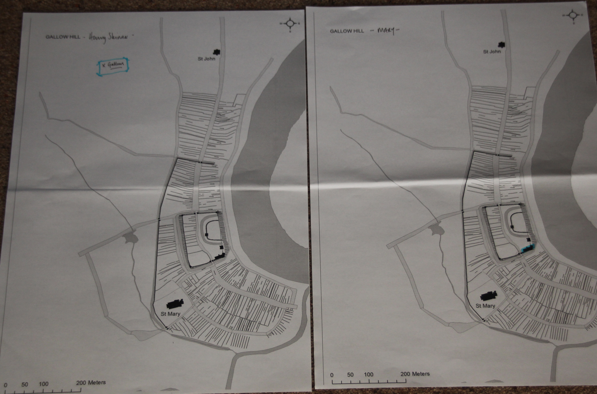
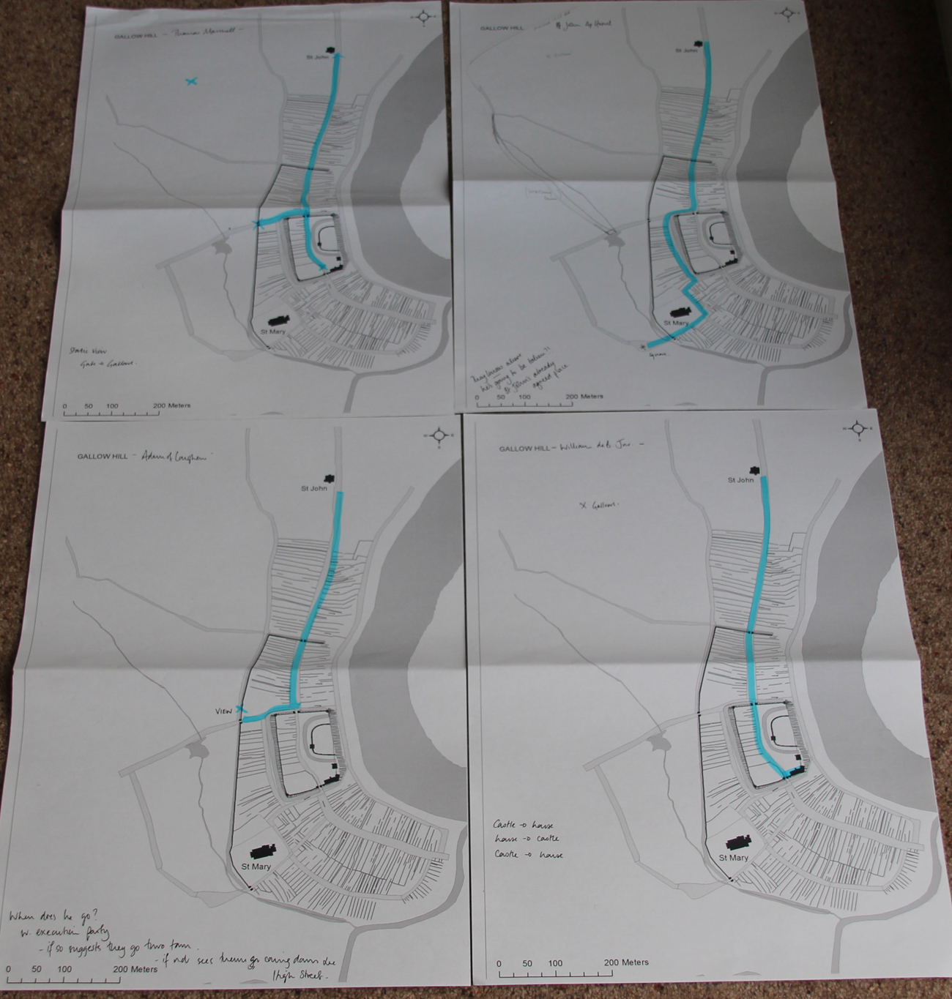
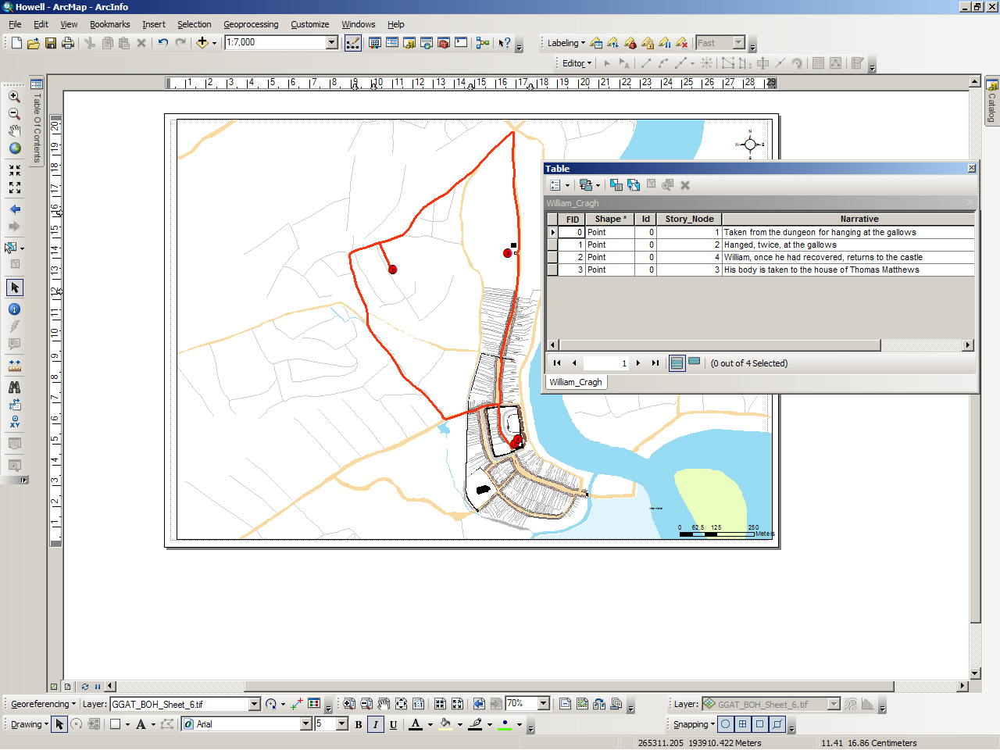

Blog
Mapping Witness Routes
New perspectives on the urban landscape of Medieval Swansea as it was experienced.

[Routes taken by William Cragh (left) and John of Baggeham (right)]
In December, Gareth and I met to bring the text and maps together for the first time – and what a revelation it proved to be. Although I have now read and re-read the witness statements many times, it was not until I saw the routes drawn out on the maps for the first time that the differences in the geographical locations and viewpoints between the characters finally became clear.
Firstly, although they describe many events which took place during the day, Mary de Briouze, William of Codineston, and Henry Skinner only actually witnessed events from single static points – namely the castle and the foot of the gallows. This realisation reinforces further the fact that the majority of their testimony is necessarily based upon what they heard – rumours and public opinion.
So, despite the detail of both Mary de Briouze and William of Codineston’s testimonies, it emerges when looking at the maps, that they did not in fact leave the castle at all while events unfolded – as you can see from the maps below.

[Henry Skinner's position above left, and Mary's on the right]
Similarly, although he does visit the house of Thomas Mathews the burgess, William de Briouze Junior does not leave the confines of the town. It is only those witnesses of lower social ranking who actually venture beyond the walls of the town – Swansea’s servants, labourers and youths.

[Clockwise from top left: routes taken by Thomas Marshall, John ap Howel, William de Briouze Junior, and Adam of Loughor]
This reinforces the importance of the recorded witness statements: we are hearing the voices and glimpsing the viewpoints of people who are usually overlooked in history. Once again, we are provided with new perspectives on the experience of the urban landscape, boundaries and liminal spaces of medieval Swansea.

[Adding the witness routes in the GIS]
Şħȧřḗ ǿƞ Ŧẇīŧŧḗř Şħȧřḗ ǿƞ Ƒȧƈḗƀǿǿķ